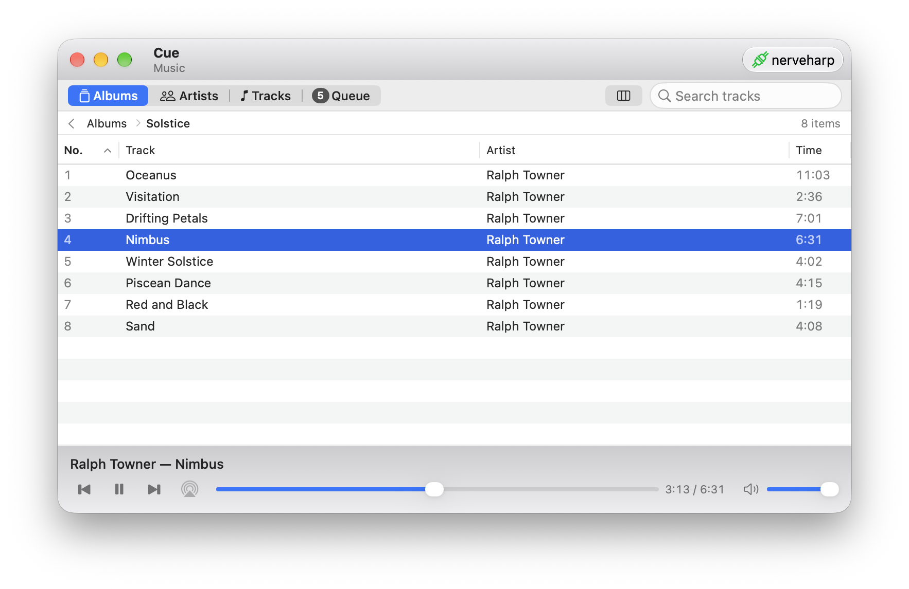

Cue
A lightweight Plex music player for macOS. Cue keeps its memory footprint small as you browse, with your albums, tracks, and queue in one native Mac window.
Download Cue for macOS 14 or later.

Tiny memory footprint
Cue loads rows as you scroll and lets go of rows you’ve browsed past. Your Plex server handles library-wide searches, and Cue starts its audio engine on demand.
Native Mac controls
The library is a standard AppKit table. Drag a column header to rearrange it, type to find a record, or press Return to play a selected track. Supports AirPlay destinations. Minimizes to the macOS Dock and responds to your Mac's media keys.
Connect your library
Unzip the download and move Cue to Applications. Open Cue, choose Connect to Plex…, and pick your music library after signing in. Double-click a track to play its album from there, or right-click an album and choose Append to Queue to hear it later.